Digital Fleet Map
Project Timeline
June - July 2018
My Role
Competitive Analysis Wireframing UI/UX Design
Tools
Adobe XD InVision
Context
Under Carnival Corporation is Holland America Group, which includes 4 cruise brands: Holland America Line, Seabourn, Princess Cruises, and P&O Australia. Inside the Holland America Group office in Seattle is a large wall display that maps the live location of each cruise in the four brands. This digital product is called Insight. Insight automatically rotates through each cruise, displaying information on ship time, latitude and longitude, speed, temperature, wind speed, webcam picture, departure and destination ports, and social media updates. Though Insight provides a great overview to all the cruises, this information is not accessible to guests onboard the cruise itself. Thus, the vision for this project was to develop a version of Insight that would be incorporated into Holland America Line's Navigator and Seabourn's Source web and mobile app for guests to interact with while onboard their cruise. The following describes the problem statement of the project:
Given that Holland America Group's existing digital fleet map is scaled for large landscape displays, how do we translate it to mobile, tablet, and laptop views for 850,000+ users to easily interact with?| 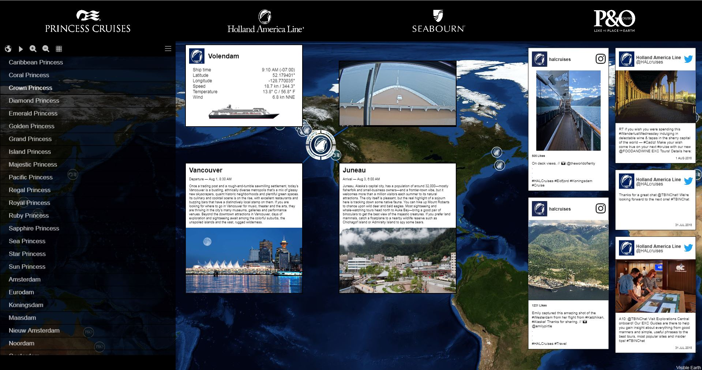 |
Competitive Analysis
To understand what various related products exist on the market today, I did some searching and found MarineTraffic and VesselFinder, both of which are web resources that maps live location and list details on vessels around the world. In exploring these products and their features, I was able to determine the scope of this project, including what features to include and not include in the design. Research also helped me consider how to present information of the cruises without overwhelming users and how to design user interactions to ensure for ease of use.
Goals
After research and defining the scope, the following goals were developed with the stakeholders:
- Ability for guests to locate all cruises in the same brand
- Ability to learn facts about different ships and ports
- Maintain existing design style defined by the brand
- Ensure for consistency, usability, and an exceptional UX
Initial Sketches
| 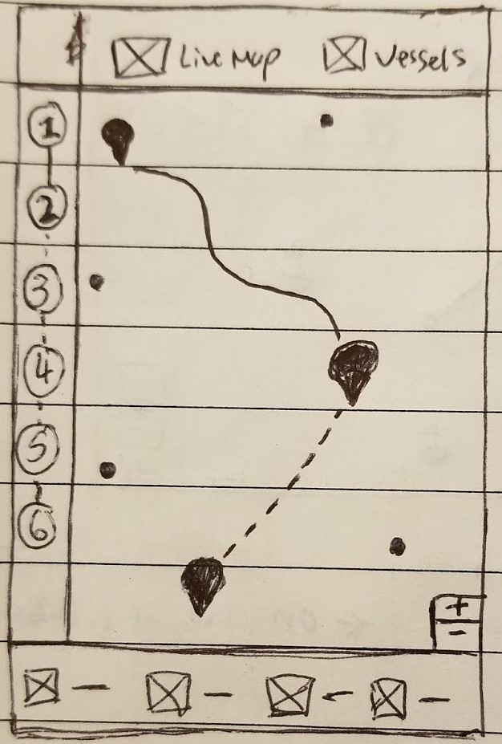 Home Screen | 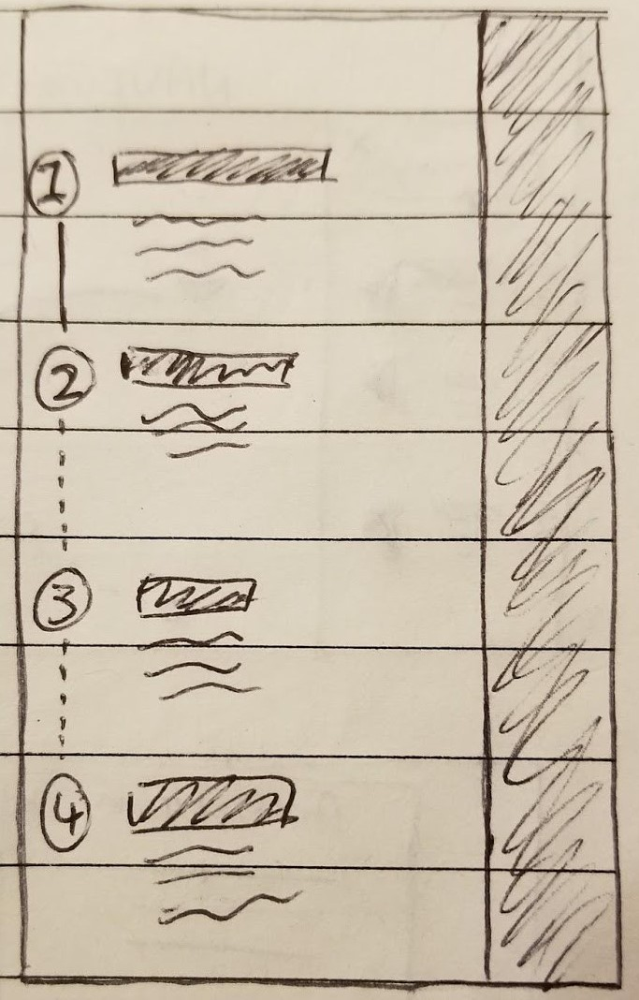 Itinerary Side Panel | 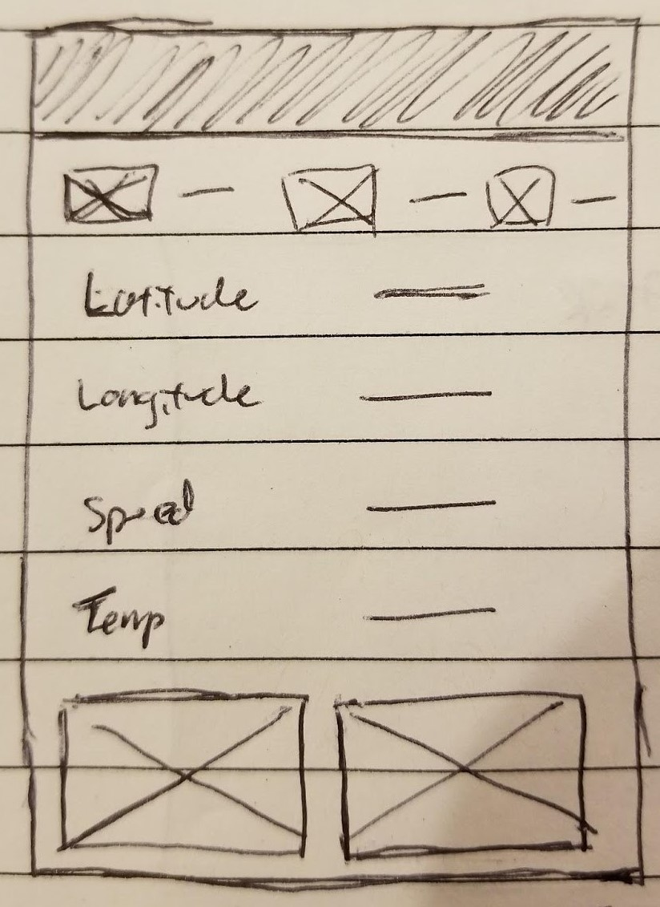 Cruise Statistics | 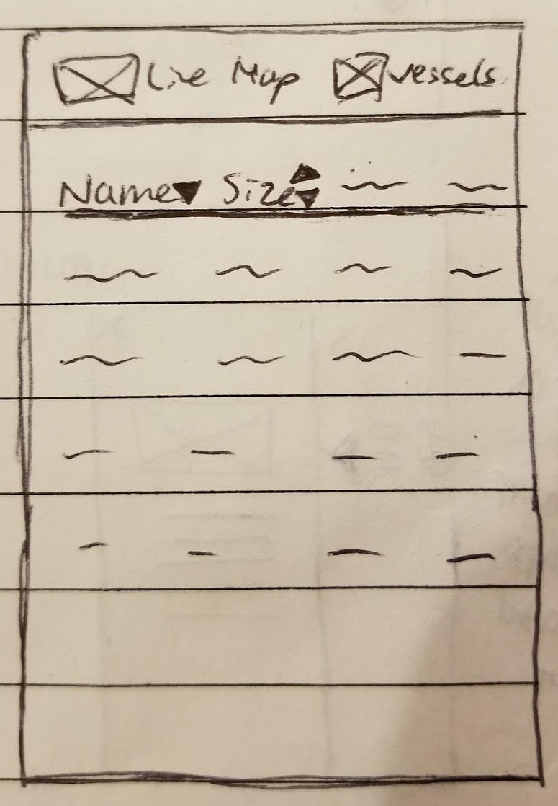 List View of All Cruises |
- Home Screen/Live Map: Located at the top is local navigation bar with two views-- 1) View of all cruises on a map and 2) View of all cruises in a list. On the left hand side is a minimized panel with numbers corresponding to each day of the guest's itinerary. The main section consists of a world map with cruise icons (dots) throughout, each representing the location of cruises from the same brand. The cruise the guest is on will have a different icon for the guest to easily locate their cruise, and their cruise path is displayed by default. The path already traveled will be presented in a solid line and the path not traveled presented in a dotted line. Upon tapping another dot (another cruise), the user will get to see that cruise's path. The plus and minus icons in the lower right hand corner provide another option to zoom in and out of the map in addition to the zooming in and out gesture common across touchscreen devices. Located at the bottom is a panel with four icons representing four different statistics deemed as the most important information users would want to know about a cruise. For instance, this could include ship time, speed, temperature, and wind speed. This bottom panel will only be displayed when a cruise is selected. Otherwise, the map will span across the whole screen.
- Itinerary Side Panel: Upon tapping on or swipping right from the minimized side panel on the home screen, it expands to cover approximately 3/4 of the screen. The guest will be able to find information on a cruise's itinerary in this panel, with each number corresponding to the day of the itinerary. A solid line connecting between the days indicates that day/itinerary has been complete, and a dotted line indicates that day/itinerary has not occurred yet. This corresponds to the style of the line as displayed on the map view in the home screen. Next to each number is a block of text with a bold header detailing the location of the cruise and a brief paragraph detailing information about that location. To navigate back to the homes screen, the user can tap on the right 1/4 portion of the screen that's not covered by the panel.
- Cruise Statistics: On the home screen, when the user taps on a cruise, the bottom panel will be displayed with four icons and text for statistics about the cruise, such as wind speed. Upon tapping or swiping up from the panel, the display will be expanded to cover the lower 3/4 of the user's screen. The icons and their stats regarding the cruise will remain at the top, followed by other less important statistics guests may want to know about a ship. Finally, at the bottom of the panel will be two live webcam view of the cruise. To navigate back to the home screen, the user can tap on the upper 1/4 portion of the screen that's not covered by the panel.
- List View of All Cruises: To navigate into the list view of all cruises, the guest can tap on the "Vessels" button located in the local navigation bar at the top of the home screen. This takes them into a page to get an overview of all the cruises in the same brand they are currently traveling on, along with other information such as size of the cruise. The user has the option to sort this list with the up and down arrows located next to a field. To navigate back to map view, the guest can simply tap the "Live Map" button in the local navigation bar at the top of the screen.
Identifying Problems & Improving
Taking my initial sketches to the stakeholders I had access to, which included the mobile application team's manager, scrum master, digital guest technology lead, and business technology analyst, I received various helpful responses that I overlooked, and I used it to further put myself in the shoes of a real guest onboard a cruise. The primary concerns I received includes:
-
Hidden affordances are unlikely for users to discover:
Given that Holland America and Seabourn's guests are of older age, it will most likely be difficult for them to understand that the side itineary panel and the bottom ship statistics panel can be interacted with. This would make them confused as to why there are numbers on the left, and would make the whole cruise statistics screen inaccessible to them. -
Difficulty recognizing identity of cruises:
When a cruise is selected on the home screen/map view, the screen does not show the name of the ship. This is not considered in the initial sketches but is one of the most important piece of information needed to identify the ship. -
Inconsistencies with existing web design:
The screen showing the list view of cruises is inconsistent with the list view of cruises on the existing website. The initial sketches also do not provide enough visuals, which is less appealing to users because users can't see what the cruise looks like.
Taking these concerns into consideration, I transformed my sketches to digital wireframes and incorporated the following changes:
- Identity: Name of cruise displayed when user taps on a cruise icon (represented with dot here). Bottom chevron displayed next to name to make it obvious there is additional information that can be discovered upon tapping on the icon.
- Revealing Affordances: Left side itinerary panel includes a popped out arrow that makes it obvious the panel can be interacted with to find more information.
- Identify today's itinerary: The circle representing today is larger than all other circles to allow users to easily identify the current day and its corresponding itinerary.
- Consistent stats with existing Insight: Cruise statistics screen displays the same 5 piece of statistics and 2 live webcame view as currently displayed on the Insight proudct.
- Consistent list view: List view of all cruises will be displayed in same format as displayed on the existing website. Each cruise will include a picture as well as the ship information and description that can be found on the current website.
Style Guide
Given that Holland America Line already established a style guide, we used that to help us make decisions regarding fonts, sizes, colors, shapes, and margins. In doing so, we ensure that our final product is consistent with all of Holland America's digital product and that it maintains the company's branding. Below are the three main font styles and the primary and secondary colors used.
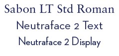 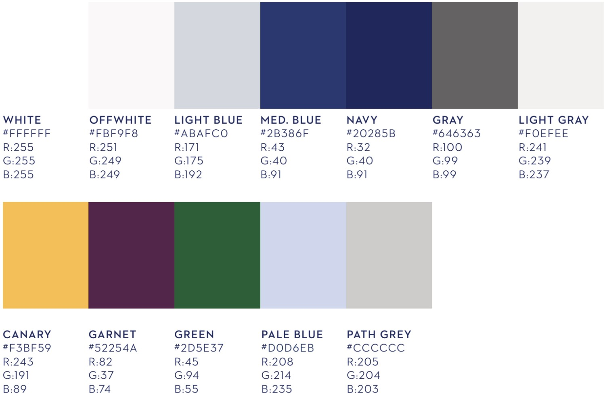Final Design
The following design was handed off to developers to implement into Holland America Line's Navigator mobile application. The mockups below are for Holland America Line, but the version for Seabourn's Source app was also designed. Seabourn's version contains the exact same layout, but uses colors and fonts according to Seabourn's existing style guide.
| 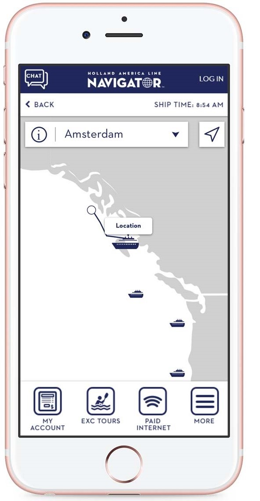 Home Screen | 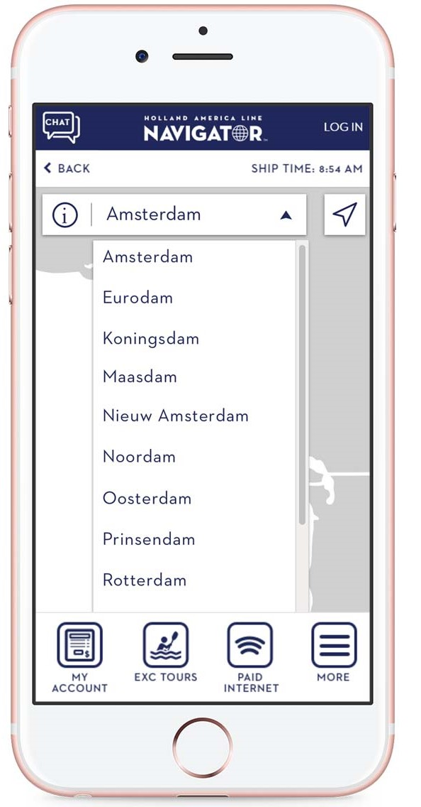 Select a cruise | 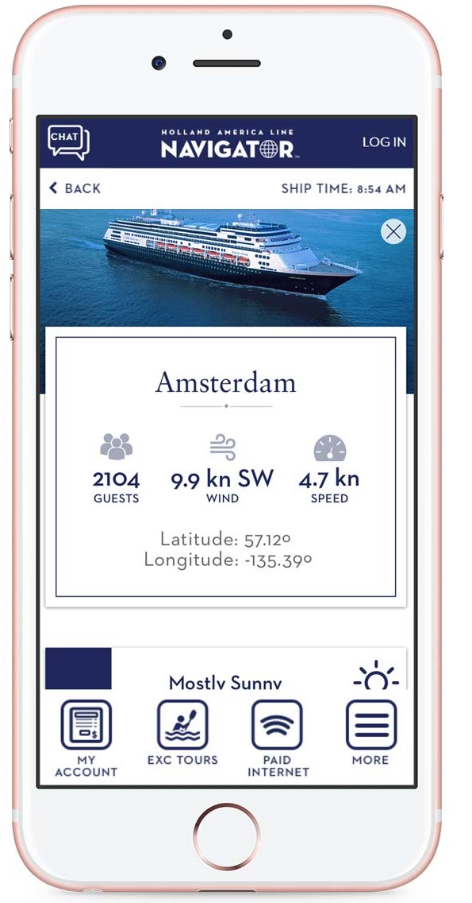 Cruise info | 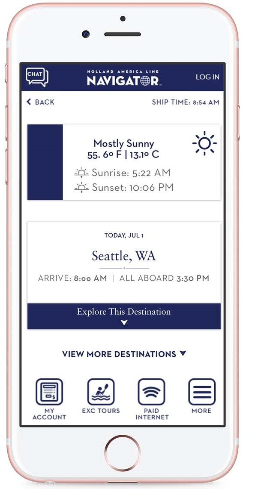 More cruise info |
- Home Screen/Live Map: Interactive map with cruise icons indicating live location of a cruise. The cruise that the user is traveling on will also show the path/itinerary when selected. The name of the cruise selected is shown on the local navigation bar.
- Select a cruise: Tapping on the arrow next to the name of a cruise on the local navigation bar will expand the menu, displaying a list of all cruises in the same brand. Selecting a cruise from this menu will navigate the user to the current location of that cruise on the map.
- Cruise info: Tapping on the information icon next to the name of the cruise will take the user to a screen with information all about that cruise. Icons used here is consistent with the icons used on the existing website.
- More cruise info: User can scroll down to discover more information on itinerary of the selected cruise. To prevent overwhelming the user, the information in the cards is minimized by default and can be expanded when the user wants to learn more about a certain destination.
What I Learned
- Importance of Understanding Users: Given that the majority of Holland America Line and Seabourn' guests are older, it was crucial for me to understand how to design to meet their needs. In the beginning, my designs had several hidden affordances that would be difficult for users to discover, which would make whole sections of information inaccessible to users. This digital fleet map could have been designed with newer design trends in mind, but ultimately, usability is the key to providing a great user experience. So, when it comes to older users, minimalistic ideas, hidden affordances, and colors that are difficult on the eyes all need to be avoided. Without understanding who Holland and Seabourn's guests are, I would not have been able to design a product with their needs met.
- Adapting to Technical Constraints: In the initial stages of design, I practiced divergent thinking and had various ideas on several features. For instance, I had imagined the map to be as interactive as Google Maps and imagined that the live routes of all cruises would be readily available. After evaluating the feasibility for implementation with the team, I recognized that technical constraints exist-- there is very limited bandwidth when onboard a cruise to provide for all other cruise's routes, especially when routes are subject to change even during the trip. To ensure that a design is feasible, communication with the developers is essential especially in the early stages of design. Evidently, it would not have been wise to have designed high fidelity mockups only to discover the design cannot be implemented. Evaluating for technical feasibility and adapting to such constraints early on is an important factor in the success of a design to development handoff.
What I'd Do Differently
- Create User Personas: Having my managers debrief my on the guests onboard Holland and Seabourn's cruises, I felt as if I understood the users well enough. I assumed I already had all the information I need on them-- age group, ethnicity, mobile platform, etc. These data are important, but I did not transform them into information I could use to design effectively. By skipping user personas, I experienced situations where my designs may be fit for young adults but not older users onboard the cruise. I believe that if I had created user personas and kept them in sight at all stages of the design process, I could have done a better job of designing to meet the user's needs.
- Test With Real Users: If given the opportunity to access guests onboard a cruise, I would have loved to test my design with them. I believe it would provide various perspectives that my managers and I have not considered. As the saying goes, You are not your user, so I expect there to be features in my design that actual users may find confusing. Without testing, these areas of concerns would never surface and be improved.